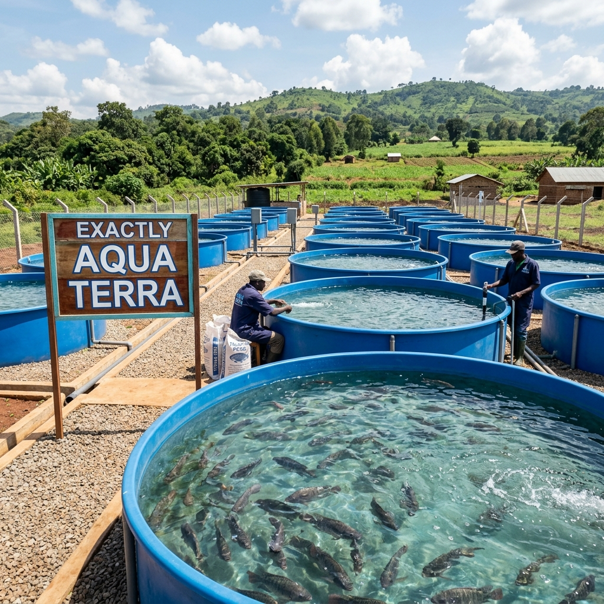
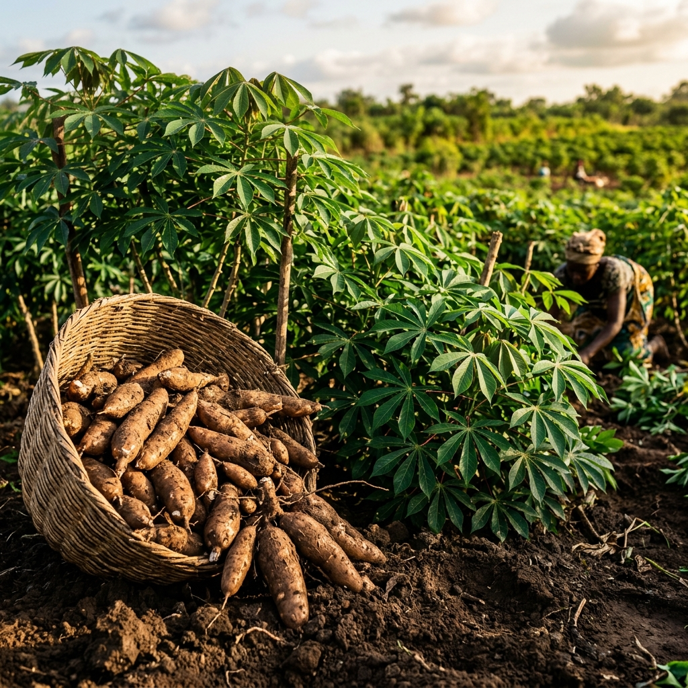
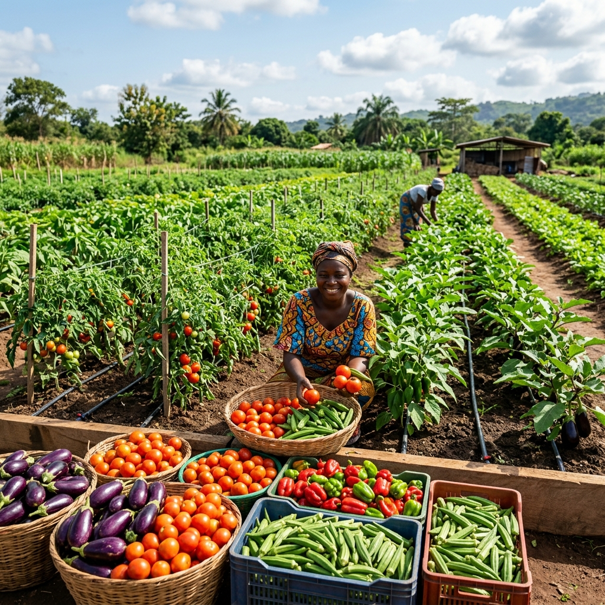

Riziculture
Culture principale de notre coopérative, s'étendant sur les terres fertiles du Bafing.
- Variétés : WITA-9, Bouaké-AM
- Rendement : 7-9 tonnes/ha
- Système : Irrigué et pluvial
- Objectif : 100 hectares exploités
Production durable et circuits courts
Culture principale de notre coopérative, s'étendant sur les terres fertiles du Bafing.


